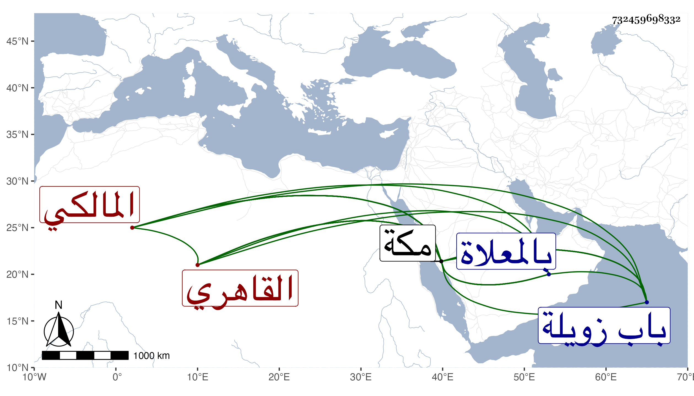

0902Sakhawi.DawLamic.ITO20230111-ara1.EIS1600.732459698332
Biography ID: 732459698332
إبراهيم بن محمد بن حسين برهان الدين القاهري المالكي نزيل مكة ويعرف بالموصلي كان رجلا مباركا تكسب بالشهادة خارج باب زويلة وأدب بها الأطفال ثم قدم مكة وأقام بها ثلاثين سنة فأزيد وكان كثير العبادة بالطواف سالكا غاية الورع والنسك والدين المتين والعبادة بحيث كان يحج منها ماشيا وله إلمام بالعلم وخط حسن يتكسب بالنسخ بحيث كتب به مختصر الشيخ خليل وشرحه لابن الحاجب الفرعي وكان يذكر أنه من تلامذته ولازم بمكة دروس الشيخ موسى على المراكشي وسمع منه ومن العفيف النشاوري وغيرهما وأدب الأطفال بمكة سنين كثيرة هي محصورة في ثلاثين وسكن برباط السدرة منها بل كان يشرف على ما يتحصل من ريع وقفه بصيانة وعفاف بحيث يتورع عن أخذ كثير من الصدقات . مات بمكة في العشر الأخير من جمادى الآخرة سنة خمس عشرة بعد أن وقف شرح ابن الحاجب وغيره مما كتبه ودفن بالمعلاة وقد بلغ السبعين فيما أحسب . ذكره الفاسي في تاريخ مكة وقال أنه شهد الصلاة عليه ودفنه وأغفله شيخنا في أنبائه نعم ذكره في إبراهيم بن أحمد بن الحسين في سنة أربع عشرة والتي تليها للخلاف في ذلك وكذا ذكره المقريزي لكنه جزم بسنة خمس عشرة .
